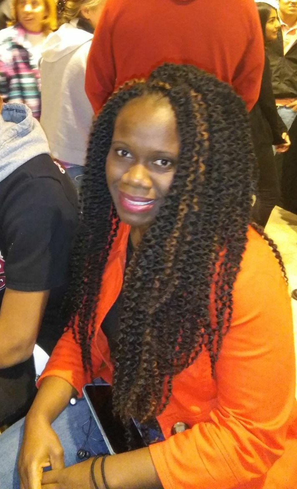

About Me

Murial Anindo is very fun and simple girl who enjoys the simple pleasures in life.Hoping to be a kick ass
web developer.Why Web Development
Having been a PM in the industry for a while its time to switch gears and do something more hands on.
Every adventure is super scary at first,but we are going to stick to it and finish it